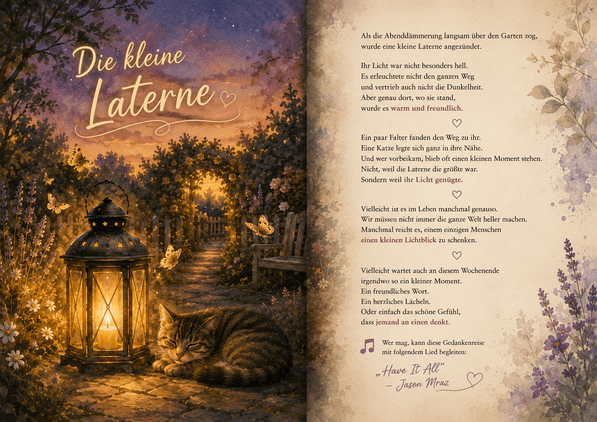

Website Builder SoftwareEine Gedankenreise zum Verschenken

Die kleine Laterne
Als die Abenddämmerung langsam über den Garten zog,
wurde eine kleine Laterne angezündet.
Ihr Licht war nicht besonders hell.
Es erleuchtete nicht den ganzen Weg und vertrieb auch nicht die Dunkelheit.
Aber genau dort, wo sie stand, wurde es warm und freundlich.
Ein paar Falter fanden den Weg zu ihr.
Eine Katze legte sich ganz in ihre Nähe.
Und wer vorbeikam, blieb oft einen kleinen Moment stehen.
Nicht, weil die Laterne die größte war.
Sondern weil ihr Licht genügte.
Vielleicht ist es im Leben manchmal genauso.
Wir müssen nicht immer die ganze Welt heller machen.
Manchmal reicht es, einem einzigen Menschen einen kleinen Lichtblick zu schenken.
Vielleicht wartet auch an diesem Wochenende irgendwo so ein kleiner Moment.
Ein freundliches Wort.
Ein herzliches Lächeln.
Oder einfach das schöne Gefühl, dass jemand an einen denkt.
🎵 Wer mag, kann diese Gedankenreise mit folgendem Lied begleiten:
„Have It All“ – Jason Mraz
Quelle: YouTube – Originalvideo
https://youtu.be/BFkTu8Y1KLs?is=ESIUa8f4NN4VBN2J
Manchmal glauben wir, nur große Gesten könnten etwas bewirken.
Dabei sind es oft die kleinen Dinge, die lange in Erinnerung bleiben.
Ein freundliches Wort, ein herzliches Lächeln oder einfach das Gefühl, dass jemand an uns denkt, können einem Tag eine ganz neue Richtung geben.
Die kleine Laterne möchte genau daran erinnern: Wir müssen nicht die Dunkelheit der ganzen Welt vertreiben.
Es genügt oft, dort Licht zu schenken, wo wir gerade stehen.
Vielleicht ist unser eigenes Licht kleiner, als wir manchmal glauben.
Doch für einen anderen Menschen kann es genau das sein, was er in diesem Augenblick braucht.
Diese Gedankenreise entstand aus einem ruhigen Sommerabend.
Als die Dämmerung langsam einsetzte und eine kleine Laterne angezündet wurde, fiel mir auf,wie wenig Licht sie eigentlich spendete.
Und doch veränderte sie ihre unmittelbare Umgebung.
Es wurde nicht plötzlich taghell.
Aber genau dort, wo sie stand, entstand Wärme, Geborgenheit und eine besondere Ruhe.
Dieser kleine Augenblick ließ mich darüber nachdenken, wie ähnlich es manchmal im Leben ist.
Vielleicht müssen wir gar nicht versuchen, alles zu verändern.
Vielleicht reicht es schon, einem Menschen für einen kurzen Moment Hoffnung, Aufmerksamkeit oder ein Lächeln zu schenken.
Aus diesem Gedanken entstand schließlich die Geschichte „Die kleine Laterne“.
Vielleicht begegnest Du heute jemandem, der gerade ein kleines Licht braucht.
Ein freundlicher Blick.
Ein aufrichtiges Wort.
Oder einfach das Gefühl, nicht allein zu sein.
Oft wissen wir gar nicht, wie viel unsere kleinen Gesten bewirken können.
Website Builder Software